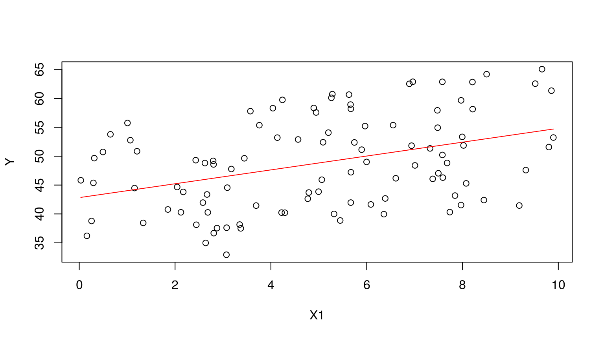

Data Analysis
Brian A. Fannin
August 21, 2017
Preliminaries
What we’ll cover
- Basic data analysis in R
- Fit a distribution
- Linear regression
Packages we’ll use
MASS(MASS = Modern Applied Statistics in S)fitdistrwill fit a distribution to a loss distribution function
actuar(Dutang, Goulet, and Pigeon 2008)emmcalculates empirical momentslevlimited expected value- Contains many more distributions than are found in
baseR such as Burr, Pareto, etc. Basically, anything in “Loss Models” is likely to be found here. - Contains the dental claims data from “Loss Models”
Generate some loss data
set.seed(8910)
years <- 2001:2010
frequency <- 1000
N <- rpois(length(years), frequency)
sevShape <- 2
sevScale <- 1000
severity <- rgamma(sum(N), sevShape, scale = sevScale)Basic analysis
Basic exploratory functions
mean(severity)
## [1] 1969.549
median(severity)
## [1] 1640.102
var(severity)
## [1] 1973851
sd(severity)
## [1] 1404.938
quantile(severity, 0.25)
## 25%
## 928.9297
quantile(severity, c(0.25, 0.5, 0.75))
## 25% 50% 75%
## 928.9297 1640.1021 2676.1799Summary
summary(severity)
## Min. 1st Qu. Median Mean 3rd Qu. Max.
## 21.93 928.93 1640.10 1969.55 2676.18 11128.25Hist again
hist(severity)Density again
plot(density(severity))
Basic analysis summary
For univariate continuous data, this is about it. Say, wouldn’t it be fun to fit this to a loss distribution?
Fit a distribution
fitdistr
library(MASS)
fitGamma <- fitdistr(severity, "gamma")
fitLognormal <- fitdistr(severity, "lognormal")
fitWeibull <- fitdistr(severity, "Weibull")
fitGamma
## shape rate
## 1.981942e+00 1.006292e-03
## (1.261418e-02) (8.096328e-07)
fitLognormal
## meanlog sdlog
## 7.312554108 0.804493446
## (0.008045739) (0.005689197)
fitWeibull
## shape scale
## 1.472049e+00 2.184117e+03
## (1.117737e-02) (1.566082e+01)q-q plot code
probabilities = (1:(sum(N)))/(sum(N)+1)
weibullQ <- qweibull(probabilities, coef(fitWeibull)[1], coef(fitWeibull)[2])
lnQ <- qlnorm(probabilities, coef(fitLognormal)[1], coef(fitLognormal)[2])
gammaQ <- qgamma(probabilities, coef(fitGamma)[1], coef(fitGamma)[2])
sortedSeverity <- sort(severity)q-q plot, plotting code
oldPar <- par(mfrow = c(1,3))
plot(sort(weibullQ), sortedSeverity, xlab = 'Theoretical Quantiles', ylab = 'Sample Quantiles', pch=19, main = "Weibull Fit")
abline(0,1)
plot(sort(lnQ), sortedSeverity, xlab = 'Theoretical Quantiles', ylab = 'Sample Quantiles', pch=19, main = "Lognormal Fit")
abline(0,1)
plot(sort(gammaQ), sortedSeverity, xlab = 'Theoretical Quantiles', ylab = 'Sample Quantiles', pch=19, main = "Gamma Fit")
abline(0,1)
par(oldPar)q-q plot
Compare fit to histogram
sampleLogMean <- fitLognormal$estimate[1]
sampleLogSd <- fitLognormal$estimate[2]
sampleShape <- fitGamma$estimate[1]
sampleRate <- fitGamma$estimate[2]
sampleShapeW <- fitWeibull$estimate[1]
sampleScaleW <- fitWeibull$estimate[2]
x <- seq(0, max(severity), length.out=500)
yLN <- dlnorm(x, sampleLogMean, sampleLogSd)
yGamma <- dgamma(x, sampleShape, sampleRate)
yWeibull <- dweibull(x, sampleShapeW, sampleScaleW)hist(severity, freq=FALSE, ylim=range(yLN, yGamma))
lines(x, yLN, col="blue")
lines(x, yGamma, col="red")
lines(x, yWeibull, col="green")Compare
Kolmogorov-Smirnov
The Kolmogorov-Smirnov test measures the distance between a sample distribution’s empirical cumulative distribution function and the same for a candidate loss distribution. More formal than q-q plots.
More K-S
testGamma <- ks.test(severity, "pgamma", sampleShape, sampleRate)
testLN <- ks.test(severity, "plnorm", sampleLogMean, sampleLogSd)
testWeibull <- ks.test(severity, "pweibull", sampleShapeW, sampleScaleW)
testGamma
##
## One-sample Kolmogorov-Smirnov test
##
## data: severity
## D = 0.0066186, p-value = 0.7735
## alternative hypothesis: two-sided
testLN
##
## One-sample Kolmogorov-Smirnov test
##
## data: severity
## D = 0.047763, p-value < 2.2e-16
## alternative hypothesis: two-sided
testWeibull
##
## One-sample Kolmogorov-Smirnov test
##
## data: severity
## D = 0.02053, p-value = 0.0004373
## alternative hypothesis: two-sidedA low value for D indicates that the selected curve is fairly close to our data. The p-value indicates the chance that D was produced by the null hypothesis.
Direct optimization
The optim function will optimize a function. Works very similar to the Solver algorithm in Excel. optim takes a function as an argument, so let’s create a function.
quadraticFun <- function(a, b, c){
function(x) a*x^2 + b*x + c
}
myQuad <- quadraticFun(a=4, b=-3, c=3)Direct optimization
Direct optimization
8 is our initial guess. A good initial guess will speed up conversion.
myResult <- optim(8, myQuad)
myResult
## $par
## [1] 0.4
##
## $value
## [1] 2.44
##
## $counts
## function gradient
## 20 NA
##
## $convergence
## [1] 0
##
## $message
## NULLDirect optimization
Default is to minimize. Set the parameter fnscale to something negative to convert to a maximization problem.
myOtherQuad <- quadraticFun(-6, 20, -5)
plot(myOtherQuad, -10, 10)
Direct optimization
myResult <- optim(8, myOtherQuad)
myResult
## $par
## [1] 1.447401e+75
##
## $value
## [1] -1.256982e+151
##
## $counts
## function gradient
## 502 NA
##
## $convergence
## [1] 1
##
## $message
## NULL
myResult <- optim(8, myOtherQuad, control = list(fnscale=-1))
myResult
## $par
## [1] 1.666406
##
## $value
## [1] 11.66667
##
## $counts
## function gradient
## 30 NA
##
## $convergence
## [1] 0
##
## $message
## NULLDirect optimization
Direct optimization allows us to create another objective function to maximize, or work with loss distributions for which there isn’t yet support in a package like actuar. May be used for general purpose optimization problems, e.g. maximize rate of return for various capital allocation methods.
Note that optimization is a general, solved problem. Things like the simplex method already have package solutions in R. You don’t need to reinvent the wheel!
Linear regression
Fake some data
N <- 100
B0 <- 5
B1 <- 1.5
B2 <- 0.8
set.seed(1234)
e <- rnorm(N, mean = 0, sd = 1)
X1 <- runif(N, 0, 10)
X2 <- runif(N, 30, 60)
X3 <- runif(N, 200, 300)
Y <- B0 + B1 * X1 + B2 * X2 + eFirst, visualize!
plot(X1, Y)Fit a model
fit <- lm(Y ~ X1)
summary(fit)
##
## Call:
## lm(formula = Y ~ X1)
##
## Residuals:
## Min 1Q Median 3Q Max
## -13.5778 -5.9302 -0.6026 6.4902 11.8346
##
## Coefficients:
## Estimate Std. Error t value Pr(>|t|)
## (Intercept) 42.8261 1.5845 27.028 < 2e-16 ***
## X1 1.2003 0.2797 4.291 4.18e-05 ***
## ---
## Signif. codes: 0 '***' 0.001 '**' 0.01 '*' 0.05 '.' 0.1 ' ' 1
##
## Residual standard error: 7.382 on 98 degrees of freedom
## Multiple R-squared: 0.1581, Adjusted R-squared: 0.1496
## F-statistic: 18.41 on 1 and 98 DF, p-value: 4.184e-05Formulas
y ~ x1
y ~ 1 + x1
y ~ 0 + x1
y ~ x1 + x2
y ~ I(x1 + x2)
y ~ x1 + x2 + x1:x2Extract data from the fit
| Element | What it shows |
|---|---|
| residuals | weighted residuals |
| coefficients | coefficients |
| sigma | square root |
| df | degrees of freedom |
| fstatistic | The F-stat |
| r.squared | r^2 |
| adj.r.squared | r^2 penalized for more parameters |
| cov.unscaled | covariance matrix |
| correlation | correlation matrix |
Predict
prediction <- predict(fit)Visualize prediction

Visualize your residuals!
plot(Y, residuals(fit))
abline(0, 0, col="red")What are we looking for?
- Heteroskedasticity => We should change the weights applied to the observations
- Doesn’t look like “noise”
- Serial correlation => Use a time series
- Apply a transform (polynomial, trig, etc.)
- Extreme values => A normal distribution may not be appropriate
Try another fit
fit2 <- lm(Y ~ X1 + X2)
summary(fit2)
##
## Call:
## lm(formula = Y ~ X1 + X2)
##
## Residuals:
## Min 1Q Median 3Q Max
## -1.9870 -0.7513 -0.1599 0.5974 2.6735
##
## Coefficients:
## Estimate Std. Error t value Pr(>|t|)
## (Intercept) 4.56639 0.56507 8.081 1.8e-12 ***
## X1 1.43554 0.03769 38.087 < 2e-16 ***
## X2 0.81316 0.01113 73.083 < 2e-16 ***
## ---
## Signif. codes: 0 '***' 0.001 '**' 0.01 '*' 0.05 '.' 0.1 ' ' 1
##
## Residual standard error: 0.991 on 97 degrees of freedom
## Multiple R-squared: 0.985, Adjusted R-squared: 0.9847
## F-statistic: 3181 on 2 and 97 DF, p-value: < 2.2e-16
fit3 <- lm(Y ~ X1 + X2 + X3)
summary(fit3)
##
## Call:
## lm(formula = Y ~ X1 + X2 + X3)
##
## Residuals:
## Min 1Q Median 3Q Max
## -1.9146 -0.7446 -0.1878 0.6012 2.6461
##
## Coefficients:
## Estimate Std. Error t value Pr(>|t|)
## (Intercept) 5.343254 1.121556 4.764 6.73e-06 ***
## X1 1.434152 0.037800 37.940 < 2e-16 ***
## X2 0.812640 0.011165 72.782 < 2e-16 ***
## X3 -0.002941 0.003665 -0.802 0.424
## ---
## Signif. codes: 0 '***' 0.001 '**' 0.01 '*' 0.05 '.' 0.1 ' ' 1
##
## Residual standard error: 0.9928 on 96 degrees of freedom
## Multiple R-squared: 0.9851, Adjusted R-squared: 0.9846
## F-statistic: 2113 on 3 and 96 DF, p-value: < 2.2e-16Questions
Questions
- Plot a lognormal distribution with a mean of $10,000 and a CV of 30%.
- For that distribution, what is the probability of seeing a claim greater than $100,000?
- Generate 100 and 1,000 observations from that distribution.
- Draw a histogram for each sample.
- What are the mean, standard deviation and CV of each sample?
- Convince yourself that the sample data were not produced by a Weibull distribution.
- Assuming that losses are Poisson distributed, with expected value of 200, estimate the aggregate loss distribution.
- What is the cost of a $50,000 xs $50,000 layer of reinsurance?
Answers
severity <- 10000
CV <- .3
sigma <- sqrt(log(1 + CV^2))
mu <- log(severity) - sigma^2/2
plot(function(x) dlnorm(x), mu, sigma, ylab="LN f(x)")References
Dutang, Christophe, Vincent Goulet, and Mathieu Pigeon. 2008. “Actuar: An R Package for Actuarial Science.” Journal of Statistical Software 25 (7): 38. http://www.jstatsoft.org/v25/i07.